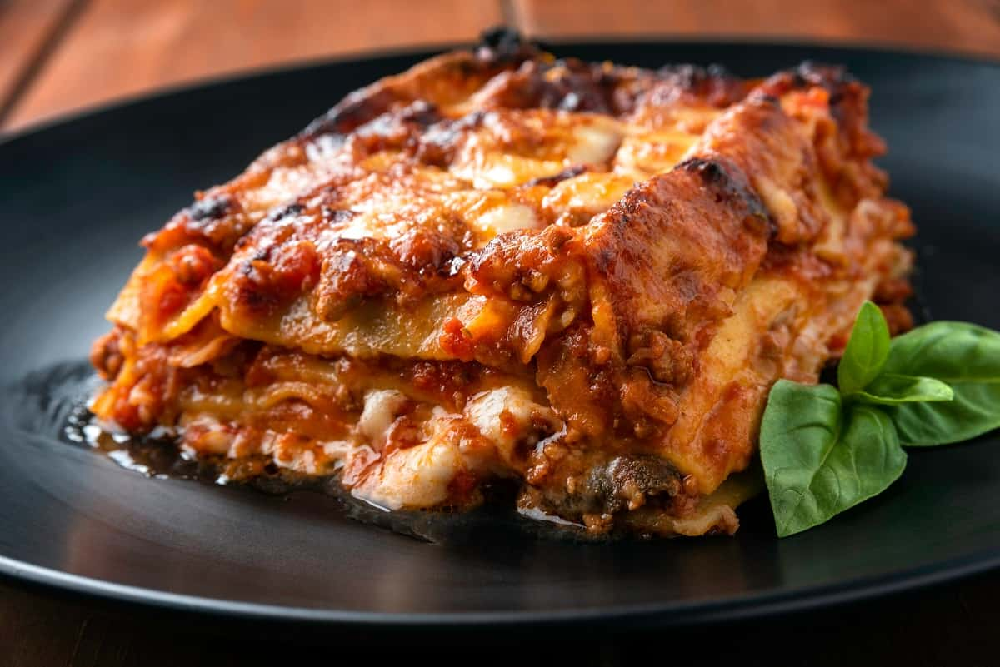

Pasticho

Description
Pasticho is Lasagna, but only in Venezuela it is known that way. It is said that the dish when it reached the coast underwent changes in its original name, it adapted to the taste of the time without losing its essence and became a delicacy par excellence. Italian-Venezuelan.
The main difference between lasagna and pasticho is that Venezuelan Pasticho does not include ricotta cheese. In fact, “pasticho” is the Venezuelan version of lasagna or the Greek Pastitsio..
Ingredients:
- 4 tomatoes
- ½ red paprika
- ½ onion
- 2 cloves of garlic
- 350 grams of fried tomato
- 1 tablespoon oregano
- 1 pinch of salt
- 500 grams of ground beef
- 200 grams of mozarella cheese
- 100 grams of emmental cheese
- 1 package of pre-cooked pasta sheets (for lasagna or pasticho)
- 1 tablespoon of cumin
Ingredients for the Bechamel Sauce:
- 4 tablespoons of wheat flour
- 4 tablespoons of butter
- 1 teaspoon nutmeg
- 1 pinch of salt
- 1 glass of milk
Steps to make a pasticho
- The first step to make the famous Venezuelan pasticho is to make the bechamel sauce. If you prefer, you can buy it already ready and otherwise, mix all the ingredients over the heat and stir constantly until you obtain a slightly thick sauce and set aside. If you want to check the step by step, follow the recipe for bechamel sauce for lasagna.
- Next it's time to make the tomato sauce. To do this, first cut the tomatoes finely or into brunoise, which are small squares.
- Also cut the rest of the vegetables. Finely chop the onion and paprika and slice the garlic. Reserve a couple of pieces of paprika aside.
- Heat a frying pan with oil and make an stir-fry sauté tomato, onion, pepper and garlic. Don't add any salt.
- After a few minutes, add the oregano and ground cumin. Stir well and mix the spices into the sauce.
- When the sauce is ready, leave a small part of it in the pan to make the meat. Put the rest in the blender and blend with the reserved paprika pieces and the fried tomato.
- Place the sauce in a pot and cook over medium heat for about 5 minutes. Check the seasoning and add salt or sugar if necessary. Sugar is used to reduce the acidity of the tomato.
- To make the meat, add it to the pan where the rest of the sauté is located without shredding and cook over medium heat.
- Stir well and continue cooking until the meat is done. Check the seasoning and correct if necessary.
- With all the preparations ready, what's now time is to assemble the pastry. To do this, place a first layer of bechamel sauce and a couple of nuts of butter in a Pyrex or special oven mold.
- Next, place the pasta sheets. Leave a separation of approximately one finger between each sheet. The Venezuelan pasticho is very juicy so take care of the spaces.
- Now it's the meat's turn, add a spoonful of meat on each of the pasta sheets.
- To finish the first layer of the meat pasticho, add a tablespoon of tomato sauce and top with a little cheese. Make a mixture of the two cheeses and reserve half of the emental cheese for the fine gratin.
- Cover this first layer with other sheets of pasta and repeat the operation until you have finished with all the ingredients. Remember to keep your separations and be generous with the bechamel sauce.
- To finish, after the tomato sauce, add a generous layer of béchamel again and finish with a layer of cheese and the rest of the emental cheese. You can replace the emental cheese with any cheese that is special for gratin. Also add a couple of nuts of butter.
- Cover the pastry with aluminum foil and place in a preheated oven at 200º C. for 30 minutes. After this time, remove the aluminum foil and raise the temperature a few degrees so that it finishes gratinating.
- After another 5-10 minutes it should be ready. To check, you can stick a knife into the lasagna and check that it comes out clean, this will indicate that the pasta is already cooked.
- Let it rest for a couple of minutes and serve the delicious Venezuelan pasticho for lunch time. Accompany with a piece of bread and a capress salad. And if you want to vary the recipe a little you can make tuna and vegetable lasagna.
Return to the recipes page